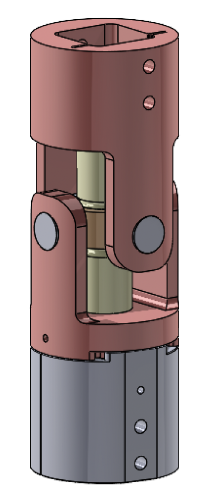
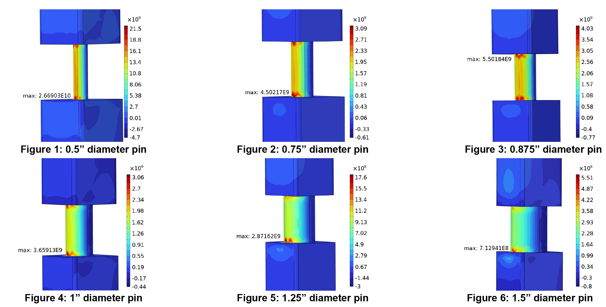
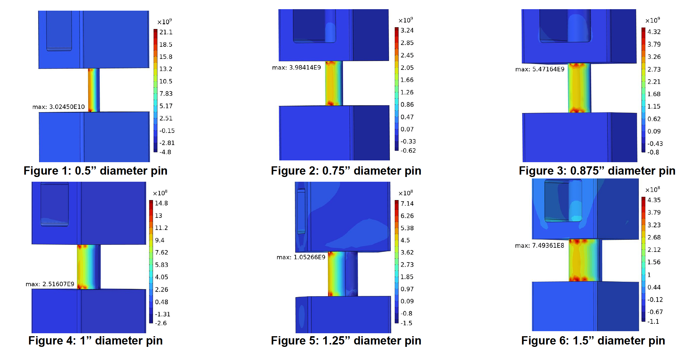

Reactive Road Sign System
An in-progress senior design retrofit mechanism designed to reduce wind-induced damage to roadside sign infrastructure through controlled rotation and sacrificial breakaway.
Project Status
This project is currently in progress and is at the Critical Design Review stage. The current design includes the full system architecture, analytical modeling, component selection, CAD development, and preliminary finite element analysis. Prototype fabrication and experimental validation are the next major steps.
Current Progress
- System architecture and load path defined
- Breakaway pin stress model developed
- Torsional spring sizing completed
- Preliminary FEA completed for pin stress trends and peak stress locations
Next Steps
- Prototype fabrication and assembly
- Destructive testing of candidate pin geometries
- Validation of analytical and simulation predictions
- Refinement of final manufacturable design
System Overview
Conventional roadside signs are rigidly mounted, which means aerodynamic loads from extreme wind events are transmitted directly into the signpost and foundation. Under hurricane-level loading, this often leads to permanent deformation or failure of the supporting infrastructure. The goal of this project is to create a mechanical retrofit system that redirects damaging loads into replaceable components rather than the structural post itself. [oai_citation:2‡Critical Design Review Report.pdf](sediment://file_00000000db8471fdbfca198b55b8ec85)
The mechanism is designed as an inline retrofit inserted between upper and lower sections of an existing signpost. Under moderate wind loading, the sign can rotate slightly into the wind to reduce drag. Under extreme loading, a sacrificial pin fractures in a controlled way, allowing the sign to fold downward rather than transferring the full load into the post and foundation. [oai_citation:3‡Critical Design Review Report.pdf](sediment://file_00000000db8471fdbfca198b55b8ec85)
All structural calculations assume a standard 30-inch octagonal stop sign mounted with the bottom of the sign approximately 7 ft above ground. These assumptions define both the projected wind-loading area and the moment arm used to convert aerodynamic force into bending moment at the mechanism.

How the Mechanism Works
1. Torsional Spring Response
At moderate wind loads, the sign is allowed to rotate about the post axis through a torsional spring subsystem located in the lower coupler. Rotational stops limit this motion to ±15°, reducing projected area while maintaining sign visibility. When the load drops, the spring returns the sign to its original orientation. [oai_citation:4‡Critical Design Review Report.pdf](sediment://file_00000000db8471fdbfca198b55b8ec85)
2. Sacrificial Breakaway Response
Under extreme wind loading, the breakaway pin reaches its failure threshold and fractures, releasing the U-joint constraint. This allows the sign to fold downward in a predictable manner, preventing excessive loads from being transmitted into the post or foundation. [oai_citation:5‡Critical Design Review Report.pdf](sediment://file_00000000db8471fdbfca198b55b8ec85)


My Role
This project is being completed as part of a two-person senior design team. My primary contributions focus on the analytical and engineering decision-making side of the project, including structural modeling, force calculations, spring sizing, materials selection, and project documentation, while collaborating closely with my teammate on iterative design development. [oai_citation:6‡Critical Design Review Report.pdf](sediment://file_00000000db8471fdbfca198b55b8ec85)
- Developed analytical wind-load and moment models for the mechanism
- Derived the combined bending and shear stress framework used to evaluate breakaway pin loading
- Performed torsional spring sizing for the partial-rotation trigger condition
- Led materials and component selection for prototype and final system planning
- Prepared major portions of the design reports and supporting documentation
- Contributed to design iteration, tolerancing decisions, and prototype planning
Engineering Analysis
Analytical modeling was used to convert wind loading on the sign face into internal stresses within the breakaway mechanism. The wind force acting at the sign centroid creates a moment about the joint, which is then converted into an equivalent transverse force in the breakaway pin. The pin is modeled as a short circular beam subjected to combined bending and shear. [oai_citation:7‡Critical Design Review Report.pdf](sediment://file_00000000db8471fdbfca198b55b8ec85)
Wind Moment
Wind loading on the sign face is converted into an equivalent moment about the mechanism.
Equivalent Pin Force
The global wind moment is translated into a localized transverse force in the pin.
Bending Stress
A bounded internal moment fraction α is used to estimate bending stress in the pin.
Maximum Shear Stress
Transverse shear is included because the pin behaves as a short beam rather than a slender one.
Combined Stress Criterion
Maximum principal stress was used to combine bending and shear effects for candidate pin geometries. [oai_citation:8‡Critical Design Review Report.pdf](sediment://file_00000000db8471fdbfca198b55b8ec85)
Torsional Spring Sizing
The torsional spring was sized independently from the breakaway pin. The spring governs the partial-rotation trigger condition, where the sign begins to reorient under moderate wind loading. The model treats the spring as linear over the small angular range of interest and uses a trigger angle of 3° with a maximum stop angle of 15°. [oai_citation:9‡Critical Design Review Report.pdf](sediment://file_00000000db8471fdbfca198b55b8ec85)
Yaw Moment
Spring Torque
Required Spring Rate
Using the nominal aerodynamic offset case, the selected spring constant was approximately 2.43 × 104 lb·in/rad, which balanced stability below the trigger condition with reasonable torque at the rotational stop. [oai_citation:10‡Critical Design Review Report.pdf](sediment://file_00000000db8471fdbfca198b55b8ec85)
Finite Element Analysis
Finite element analysis was conducted to evaluate stress distributions within the breakaway pin and surrounding joint components under ultimate wind loading. The main goal was to identify peak stress regions, compare those trends against the analytical model, and use the results to guide breakaway pin diameter selection. The simulations were treated as comparative, upper-bound stress estimates rather than a full fracture-mechanics model. [oai_citation:11‡Critical Design Review Report.pdf](sediment://file_00000000db8471fdbfca198b55b8ec85)


Across the simulation study, exponential fits suggested optimal pin diameters of approximately 1.31 in for the rigid configuration and 1.17 in for the non-rigid configuration when matched to the selected 17-4 PH stainless steel pin material. These values were used as upper-bound estimates to guide prototype testing. [oai_citation:12‡Critical Design Review Report.pdf](sediment://file_00000000db8471fdbfca198b55b8ec85)
Prototype Development
A physical prototype was developed during the design process to evaluate assembly behavior, joint motion, and the feasibility of the constrained U-joint concept. At the current stage, the prototype serves as a proof-of-concept and fabrication reference for future testing. The next phase is destructive testing of candidate breakaway pins against the analytical and simulation predictions. [oai_citation:13‡SDR Report - Team 249.docx](sediment://file_00000000529871fdbbc05cb10f70fa24)

Materials & Design Constraints
Material Strategy
The final design uses stainless steel alloys to balance strength, corrosion resistance, and manufacturability. The breakaway pin was selected as 17-4 PH stainless steel, while major structural components were selected as 420 stainless steel. [oai_citation:14‡Critical Design Review Report.pdf](sediment://file_00000000db8471fdbfca198b55b8ec85) [oai_citation:15‡SDR Report - Team 249.docx](sediment://file_00000000529871fdbbc05cb10f70fa24)
Key Constraints
The design had to remain compatible with standard roadside infrastructure, preserve mounting height requirements, survive high-salt outdoor environments, and remain practical to fabricate and test within the senior design timeline. [oai_citation:16‡Critical Design Review Report.pdf](sediment://file_00000000db8471fdbfca198b55b8ec85)
Expected Impact
If validated experimentally, this system could reduce damage to signposts and foundations during severe storms by shifting failure into a low-cost replaceable component. More broadly, the project explores how passive mechanical design can improve infrastructure resilience without requiring full replacement of existing roadside systems.